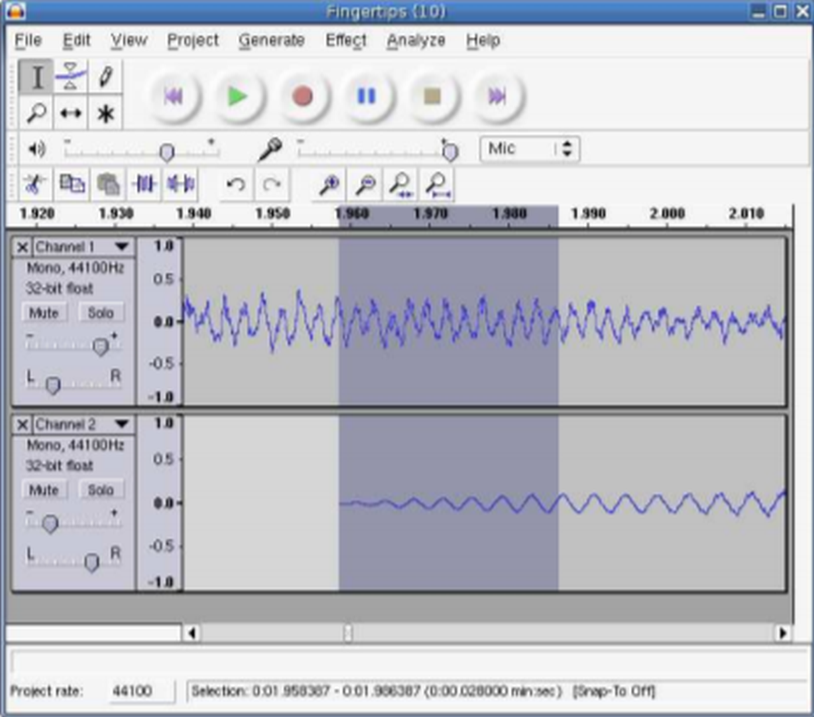
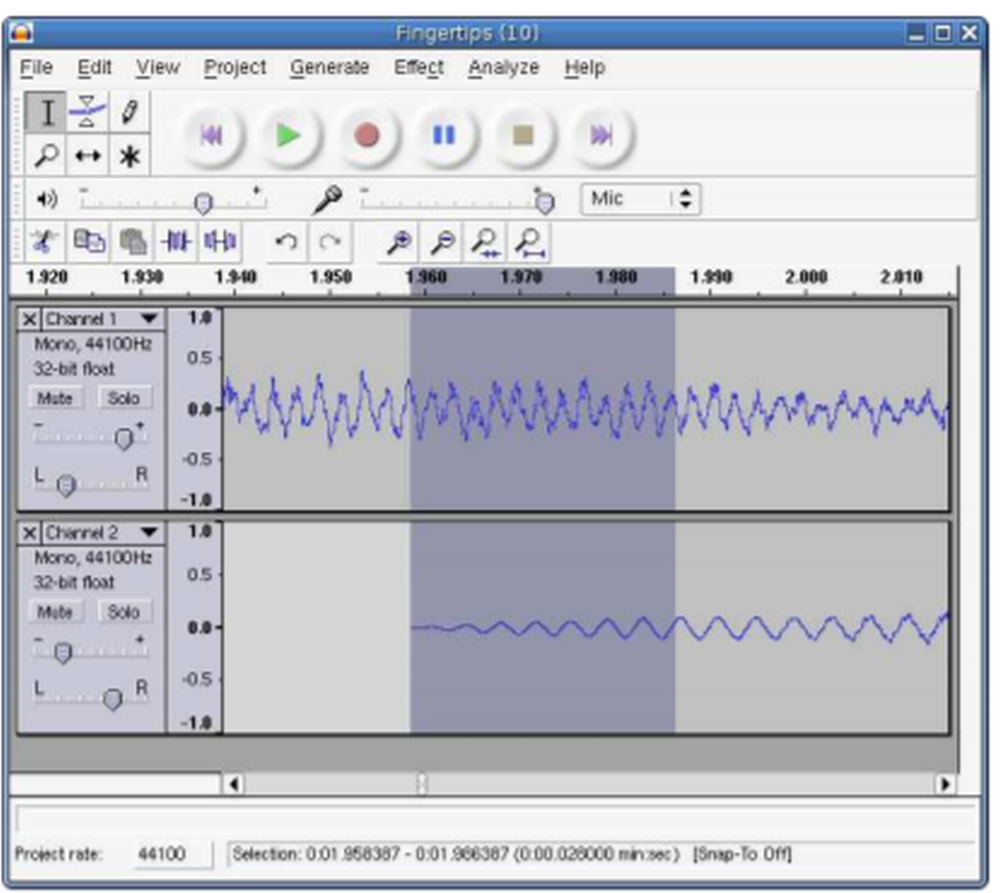

Programos Audacity Windows operacinėje sistemoje

Audacity programos naudojamas

. Šią programą galima
naudoti
garso irašymui;
įrašų konvertavimui į skaitmeninį pavidala
Garso failo redagavimui formate Ogg Vorbis, MP3 ir WAVE;
agarso failų karpymui, kopijavimui, įklijavimui;
įrašo garso greičio bei pagrindinio tono formatavimui;
Audacity galimybės